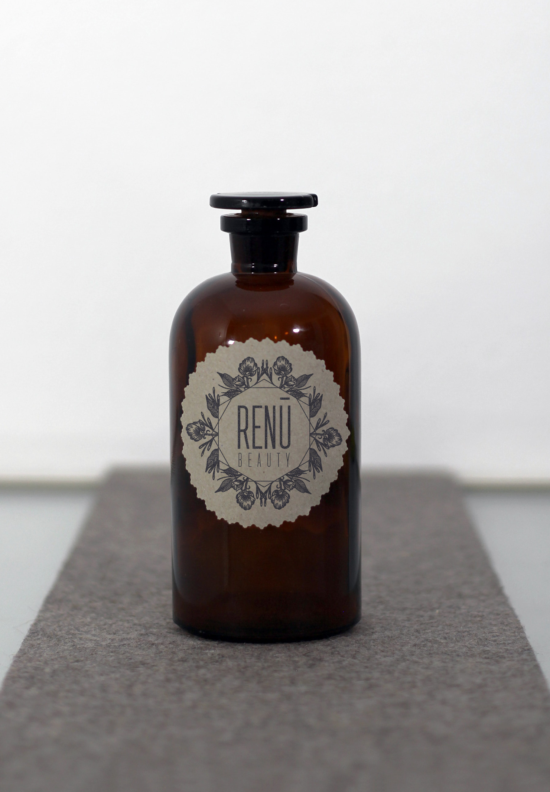
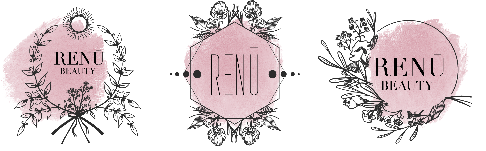

Renu Cosmetics
Renu Cosmetics is a small, natural brand of beauty products designed by Paige Johns out of Salt Lake City, Utah. Her career as an esthetician has inspired her to launch her own line of hand-crafted natural beauty products. In order to promote a minimalist and natural look, I provided paige with several options. Packaging was meant to be home-made looking and authentic.


Boulder BAJA
Boulder BAJA is an engineering senior capstone class at the University of Colorado Boulder where a group of 30 students design and build an off-road vehicle for the SAE Baja race. I was requested to refresh a logo by BAJA's team captains that emphasized the racing element while still utilizing the school's mascot.


Bruce Grossman Photo
Designed before purchasing an Apple Pencil and iPad, this project was drawn entirely with mouse strokes. Bruce is local New York portrait photographer, and was searching for a unique, art-nouveau inspired watermark for his photos.